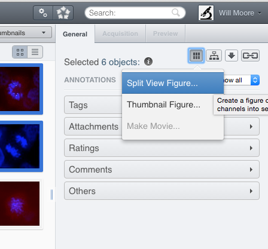

OMERO.figure
OME Users' meeting, Dundee
1st June 2016
Will Moore

Presentation Outline
- Figures
- Design goals
- OMERO.figure app
- Technical
- Demo
What's in a Figure?
Porter 2007Manual Figure Creation
- Export of images as TIFFs
- Decide on which Z sections or projections
- Choose timepoints for movies
- Correct channels and rendering settings
- Make notes in case you need to repeat!
- Import into Illustrator / Photoshop / etc.
- Cropping (same region in multiple images)
- Align into rows / grids
- Add scalebars, labels, ROIs
Important to preserve image quality & integrity
- Instruction for authors:
- JCB | Cell | J. Cell Sci etc.
- 10 posts on image screening (JCB)
- How to Create Publication-Quality Figures
Problems
- SLOW!!!
- Need to know exactly what to export at start
- Loss of Metadata:
- pixel sizes
- channel names
- rendering settings
- Loss of Pixel data:
- Export as 8-bit TIFF
- Resizing images may resample them
- No links between Figure and original images
Figure export scripts
OMERO 4.2 (July 2010) Demo Movie

OMERO.figure Design Goals
- Keep it fast!
- Combine images into figure in OMERO (no export)
- Flexible layout with shortcuts for grids
- Each panel is a fully editable image viewer
- Edits applied to multiple selected images
- Exportable as PDF / TIFF
History of a "side project"
- Initial Commit 'weblabs' May 2013
- New 'webfigure' Repo Sept 2013
- Beta release in March 2014
- 1.0.0 - October 2014
- 1.1.0 - April 2015: Tiffs, Cropping, Pages
- 1.2.0 - November 2015: Draw shapes
What is OMERO.figure?
- OMERO.web app, same as OMERO.webclient
- Download, put on
$PYTHONPATHand add to web 'apps'
$ bin/omero config append omero.web.apps '"figure"'Services used by OMERO.figure

OMERO.figure tech
-
Backbone.js (light-weight MVC library)
- model
- events
- view
- templating
- router
- Bootstrap - css, icons, js
- Mousetrap - Keyboard bindings
- Raphael - Drag handles etc.
- Reportlab - PDF generation

Layout

Rendering

Z-index, Time

Labels & Scalebars

Finally...
- Save to OMERO
- Export to PDF / TIFF
- Share url
- Links to images in OMERO
Export as PDF / TIFF

What's next?
- Improve ROI support:
- Load ROIs from OMERO
- Save ROIs back to OMERO
- More shapes (freehand, polygon, label)
- Improved integration with OMERO.webclient
- Embeddable Preview
- Labels from Tags
More information
- figure.openmicroscopy.org
- OMERO.figure Trello Board
- Twitter:
Thank you
- Jason Swedlow
- OME team